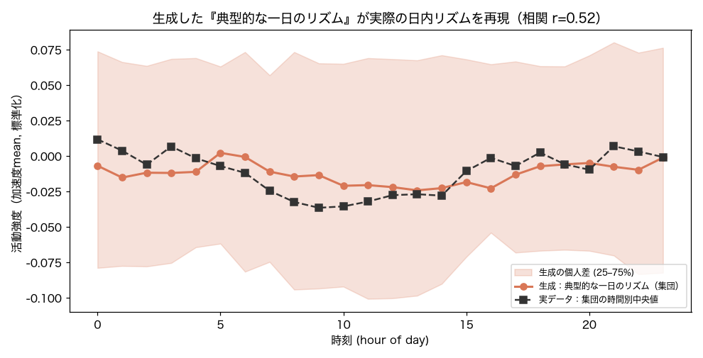

V10 反実生成（典型的な一日）
p(行動 | user, 時刻) から『あなたの標準的な一日のリズム』を生成し、実データの逸脱を浮かせる。
60ユーザ数
0.52生成↔実リズム 相関r
400生成サンプル/時刻
1. このデータは何か
ExtraSensory（60人）。加速度6統計量＋時刻＋ユーザ。
2. 何を・どう学習したか
条件付き NSF p(行動 | user, 時刻) を学習し、時刻を掃引して flow からサンプル＝典型的な一日の活動リズムを生成。集団（多数ユーザ）で平均した生成リズムを、実データの時間別中央値と重ねて再現性を見る（帯＝生成の個人差）。
3. 結果
生成した『典型的な一日のリズム』は実際の日内リズムをよく再現する（集団で相関 r=0.52）―朝〜日中に活動が上がり夜に下がる。帯＝人によって『普通の一日』が違う（個人差）。生成(サンプリング)と密度評価が同一モデルなのはNFの独自点。
正直な注：1分粒度の活動はバースト的で、単一個人の細かな時間構造の再現は弱い（日次集約が効くのは姉妹の PMData）。

生成した典型的な一日のリズム（集団中央値＋個人差帯）vs 実データの時間別中央値。
4. 図の見方
橙線：生成した集団の典型的な活動リズム。黒破線：実データの時間別中央値。両者が近い＝生成した『普通の一日』が実際の日内リズムを再現。帯＝生成の個人差。
5. 解釈と意味・使い道
示すこと：NFは個人の『普通の一日』を生成でき、そこからの逸脱を同じモデルの尤度で説明できる。
なぜNFか：拡散は生成が遅くGANは尤度なし。NFは典型の生成と逸脱の測定を一度に。
使い道：生活リズムの逸脱検知（見守り・体調変化）、パーソナルな基準線の提示、生成による『あるべき一日』の可視化。
正直な限界：加速度6次元のみで活動強度に還元＝粗い。曜日は未条件。
条件付き Normalizing Flow（zuko NSF）で自動生成。
NF×生活データ探索シリーズの一部。